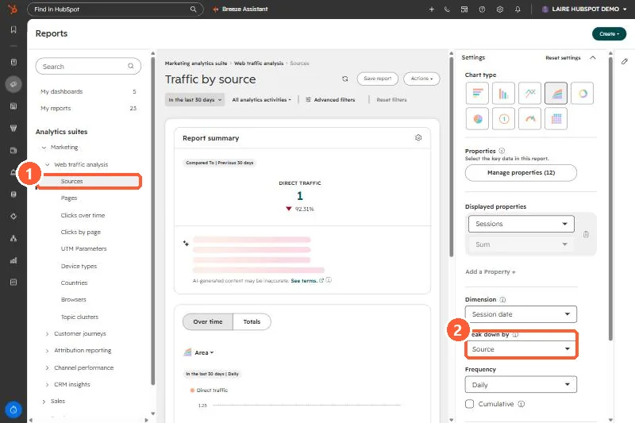

Short answer
HubSpot's traffic sources include AI Referrals for visits from AI assistants and chatbots such as ChatGPT, Claude and Perplexity. Only AI-specific domains count, for example gemini.google.com rather than google.com. On contacts, Traffic Source Drill-Down 1 stores the platform domain (such as chatgpt.com) and Drill-Down 2 stores the utm_campaign value if there is one.
1. Where it shows
AI Referrals appears as its own row in the Sources report when there is traffic for it. My demo portal had only direct traffic in the period shown.


2. What counts
- Referrals from AI assistant domains like chatgpt.com, claude.ai and gemini.google.com.
- Not general search domains. A click from Google search results is still organic search.
3. Use it in lists and reports
Filter contacts where Original or Latest Traffic Source is AI Referrals, and break down by Drill-Down 1 to compare platforms. For tracking where your brand appears in AI answers, see AEO prompts and recommendations.